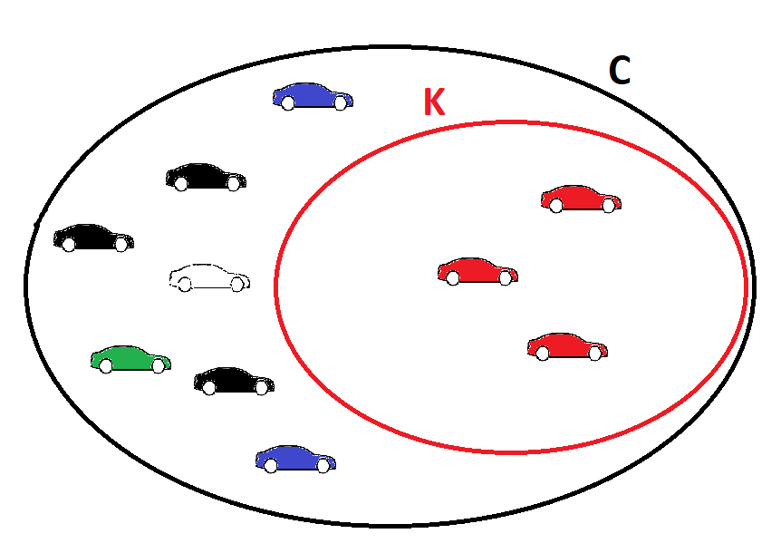

Acerte a questão acima para desbloquear esta pergunta!
Acerte a questão acima para desbloquear esta pergunta!
Se temos um conjunto C com um número "n" de elementos e K, um subconjunto de C, com um número "p" de elementos, podemos dizer que, ao selecionarmos um elemento de C ao acaso, a chance desse elemento pertencer a K é p ÷ n. Esse é o raciocínio fundamental da probabilidade. Explicarei em termos mais simples:
Imagine um estacionamento com 10 carros no total. Desses 10 carros, 3 são vermelhos. O conjunto de 10 carros é como se fosse o conjunto C; os 3 carros vermelhos, o K. Perceba que o conjunto K é um subconjunto de C, pois todos os 3 carros vermelhos também pertencem ao conjunto C, uma vez estão no estacionamento. Visualize isso com o diagrama de Venn a seguir:

Se escolhermos um dos 10 carros ao acaso, a chance de ser vermelho é, portanto:
\[\frac{Carros\;Vermelhos}{Total\;de\;Carros}=\frac{n(K)}{n(C)}=\frac{3}{10}=33\frac{1}{3}\%\]
Perceba a semelhança com as fórmulas da especificidade e da sensibilidade no texto da página. Daí a possbilidade de interpretarmos ambas como probabilidades.
Correto! De que vale um teste identificar corretamente todos os saudáveis como saudáveis (especificidade de 100%) se ele aponta uma grande quantidade de doentes como saudáveis (grande número de falsos negativos)? O teste perfeito é aquele com especificidade e sensibilidade de cem por cento.
Errado! Pense comigo: há 100 doentes e 100 saudáveis a serem testados. Os 100 saudáveis foram identificados como saudáveis pelo teste (ou seja, o resultado foi negativo para todos). A especificidade é, portanto, 100%. Porém, 66 doentes foram identificados como saudáveis. 66 falsos negativos. De que adianta termos uma especificidade muito boa se o número de falsos negativos é alarmante? Os Falsos Negativos (FN) serão abordados no próximo conceito, a sensibilidade. O teste perfeito é aquele com especificidade e sensibilidade de cem por cento.
\[e=\frac{VN}{VN+FP}=\frac{55}{55+6}=\frac{55}{61}=0,90164...=90\frac{10}{61}\;\%\]
\[s=\frac{VP}{VP+FN}=\frac{92}{92+37}=\frac{92}{129}=0,71317...=71\frac{41}{129}\;\%\]
Problemas com matemática? Clique [AQUI].
Aproximadamente, uma vez que estamos lidando com probabilidade, o que está intrinsecamente associada a fenômenos aleatórios. Quando lemos que "a especificidade de um teste é 70,65%", por exemplo; significa que, se testarmos 10.000 pessoas saudáveis, identificaremos uma média de 7.065 pessoas como saudáveis. Essa expressão "em média" indica que podemos encontrar em testes sucessivos 7066, 7071, 7064..., mas ao tirarmos a média de todos os valores acharemos 70,65%.
É por isso que, ao solicitada a interpretação de um valor como especificidade, sensibilidade, acurácia & c. vale à pena adicionar o termo "aproximadamente" ou "em média" na resposta, como o fiz no texto da página.